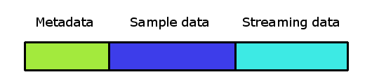

Firelight Technologies FMOD Studio API
This section explains the concepts of Studio Banks and how loading works.
The FMOD Studio Bank file contains event metadata and sound data in the one file.

Loading a bank will load all metadata, which contains information about all the events, parameters, and other data needed for all events associated with that bank.
The sound sample data has two different types, normal sample data, and streaming sound data. Normal sample data can be loaded per event type. Streaming data is streamed in on demand as events are played, and is never fully loaded ahead of time. Streaming data is good for music, voice over, and other sounds which are of a long duration. Whether sound data is streamed or not is set up by the designer in FMOD Studio and cannot be changed at runtime.
Banks are loaded by calling Studio::System::loadBankFile. They are unloaded by Studio::Bank::unload.
Bank loading can be controlled with the FMOD_STUDIO_LOAD_BANK_FLAGS. When loading banks with FMOD_STUDIO_LOAD_BANK_NORMAL, the function will not return until the bank has completed loading. When using the FMOD_STUDIO_LOAD_BANK_NONBLOCKING flag, the load bank function will return before the bank has completed loading.
As soon as a bank has completed loaded, all the metadata in it can be accessed. This means that event descriptions can be found with Studio::System::getEvent, and instances created from those descriptions. The bank loading state can be queried with Studio::Bank::getLoadingState.
Sample data is loaded from one of the three actions:
For cases where most or all of the events may play at any time, then loading calling Studio::Bank::loadSampleData to load all data up front may be the best approach. Once the bank sample data has loaded, then all event instances can be created or destroyed and use that existing data immediately. However, it does have the highest memory overhead. Repeated calls to Studio::Bank::loadSampleData are reference counted, and the bank's sample data is only unloaded when Studio::Bank::unloadSampleData has been called an equal number of times.
Sample data can be loaded for selected event using Studio::EventDescription::loadSampleData. It is best to load the sample data ahead of time, so that the event's sound sample data is ready when needed. For cases of very common events, the sample data could be loaded for the duration of the game or level. For less common events, the sample data may be loaded in or out as needed. Repeated calls to Studio::EventDescription::loadSampleData are reference counted, and the bank's sample data is only unloaded when Studio::EventDescription::unloadSampleData has been called an equal number of times, or if the entire bank is unloaded.
If neither of these API calls have been made, then sample data will be loaded if instances exist for that event. The sample loading state can be queried with Studio::EventDescription::getSampleLoadingState. If the event's sample data has not yet finished, the event can still be started with Studio::EventInstance::start. However, some sounds play slightly later than usual because the sound data may not have completed.
The automatic loading of sample data is the simplest approach and uses the least amount of memory. However it has the following disadvantages:
For the case of one-shots, this may mean that the sample data is constantly loaded and unloaded whenever a one-shot plays, which is not a good approach. For these sort of common sounds, it is better to call Studio::EventDescription::loadSampleData so the sample data stays in memory rather than constantly unloading then reloading it.
The three approaches to bank loading can be combined. The sample data will stay loaded for as long as at least of the three conditions are met.
For users who don't explicitly load sample data, sounds will be loaded and unloaded on demand. To help avoid unnecessary file access, there is an idle pool for recently used sounds. When a sound is no longer needed (e.g due to an event instance finishing), its sample data will be placed into the idle pool to be reused later if needed.
By default, the idle pool is set to 256kB in size. This can be customized via the FMOD_STUDIO_ADVANCEDSETTINGS.idleSampleDataPoolSize field.
Streaming data is automatically loaded on demand when needed. There is no API for it since it cannot be preloaded or unloaded.
The Strings bank is a special bank which contains the string lookup of event path to GUID. The strings bank functions identically to a normal bank except that it never contains sample or streaming sound data.
Banks can be unloaded by calling Studio::Bank::unload. Unloading a bank will free all sample data, invalidate the events descriptions belonging to that bank, and destroy associated instances.